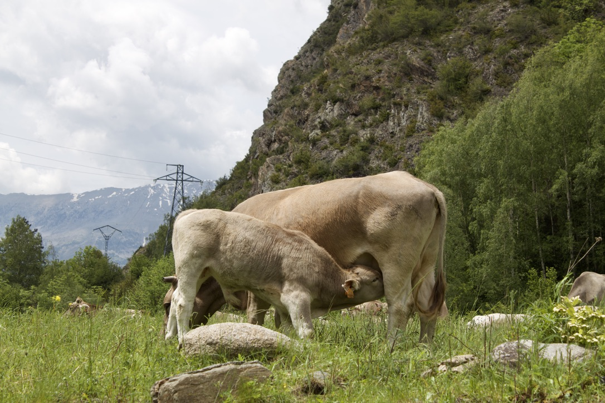

¿Dónde se encuentra?
Benasque ocupa el valle central de los tres que conforman el Parque
Natural Posets-Maladeta, un magnífico ejemplo del paisaje pirenaico
donde las más altas cumbres de todo el Pirineo quedarán grabadas para
siempre en tu retina.
El centro neurálgico del valle es el pueblo de Benasque. Además de un
precioso casco urbano, en él encontrarás todo tipo de servicios
turísticos, desde comercios hasta hoteles y restaurantes.
¿Qué hacer?
Si tienes ganas de nieve, escápate a la estación de Aramón Cerler, muy
próxima a Benasque. En la de Llanos del Hospital podrás practicar esquí
de fondo, nórdico y de travesía, y en verano, disfrutar de los paseos.
Pero sin duda, la mejor manera de conocer este valle paradisíaco es
recorriendo sus múltiples senderos. Si no estás en muy buena forma
física, no te preocupes, ya que existen rutas adaptadas a todo tipo de
edades y preparación. Gracias a ellas podrás sentir la naturaleza en
estado puro. Te recomendamos, especialmente, la famosa excursión que te
llevará hasta la bella cascada del Forau D’Aiguallut.
¿Qué más?
En las inmediaciones de Benasque merece la pena darse una vuelta por el
pueblecito de Anciles y contemplar sus bonitas casas solariegas. Eriste,
también cercano, es un buen punto de partida para acercarse a la mole
del Posets, segunda cima pirenaica.
MUUUUU 🐮
Las vacas de Ternera del Pirineo pastan libres y sin prisas por los
alrededores de Villanova, un pueblo del valle de Benasque, como han
hecho durante más de cuatro generaciones en el marco de la ganadería
familiar. Los hermanos Pablo y Santiago Lamora, de casa Chirón, son los
responsables de hacer perdurar esta tradición, con una iniciativa que
contribuye a mantener viva la ganadería de montaña y preservar así una
cultura milenaria que respeta la naturaleza y la economía local. Sus
productos, a base de una carne sin antibióticos, fruto solamente de la
hierba, las plantas pirenaicas y el aire de montaña, que se pueden
adquirir sin intermediarios, cuentan con el Sello Responsabilidad Social
de Aragón y el Certificado Ganadería Extensiva.

En el valle de Benasque, en la Ribagorza, las vacas siempre han formado
parte del paisaje. Las de Pablo y Santiago Lamora, ganaderos de familia
y de corazón, pastan en calma, libres y sanas, señoras de los prados, de
los arroyos y de la montaña, en un paraíso natural. Ambos se criaron
jugando entre estos animales y ayudando al padre a cuidarlos, a cortar
la hierba, a ordeñar y, aunque al crecer decidieron emprender otras
carreras –Santiago es ingeniero informático y Pablo estudió arquitectura
técnica–, finalmente han decidido ser ganaderos como aprendieron de sus
antepasados. Así, en 2007, “cuando nuestro padre nos dejó, decidimos
retomar la empresa familiar y contribuir con nuestro día a día a
mantener vivos los saberes de la ganadería de montaña”.
Porqué nuestras vacas son tan importantes
Son las razas ganaderas autóctonas más importantes de nuestro país
siendo la primera que contó con Libro Genealógico. Sin embargo, en los
años 70 del pasado siglo y debido a los cruzamientos indiscriminados
estuvimos a punto de perder a esta sensacional vaca: LA PIRENAICA
Technique 2: JavaScript Parallax with transform
The section above uses
JavaScript with
transform: translateY()
to move elements at different speeds. This offers more control than pure
CSS.
// Each layer has a data-speed attribute
const layer = document.querySelector('.layer-back');
const speed = layer.dataset.speed; // 0.2 = very slow
window.addEventListener('scroll', () => {
const scrolled = window.pageYOffset;
const yPos = -(scrolled * speed);
layer.style.transform = `translateY(${yPos}px)`;
});
Advantages of JavaScript Parallax:
-
Precise Control:
You can control exactly how fast each layer moves
-
Multiple Elements:
Move any HTML element, not just backgrounds
-
Works on Mobile:
Unlike
background-attachment: fixed
-
Complex Animations:
Combine with opacity, scale, rotation, etc.
⚠️ Considerations:
- Requires JavaScript (fallback if JS is disabled)
-
Use
requestAnimationFrame
for better performance
-
Respect
prefers-reduced-motion
Technique 3: Multi-Layer Images
The section above combines multiple background images moving at
different speeds to create a 3D depth effect.
📊 Comparison of All 3 Techniques:
|
Technique
|
Implementation
|
Mobile Support
|
Complexity
|
|
CSS Fixed
|
background-attachment: fixed
|
❌ Limited
|
⭐ Very simple
|
|
JS Transform
|
transform: translateY()
|
✅ Works
|
⭐⭐ Medium
|
|
Multi-layer
|
Multiple elements + JS
|
✅ Works
|
⭐⭐⭐ Advanced
|
Final Reflection:
Which technique do you prefer? CSS is perfect for simple sites.
JavaScript offers full control but requires more code. Multi-layer
creates the most impressive effects but may impact performance.
The best choice depends on your specific project.